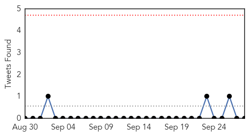

Swine Flu
30-Day Web Trend
1 alerts, 0 warnings
30-Day Twitter Trend
0 alerts, 0 warnings
Article Locations

Article Confidences

Top Articles:
-
No articles found for Sep 28, 2014
Top Tweets:
-
No tweets found for Sep 28, 2014
Dengue Fever
30-Day Web Trend
4 alerts, 17 warnings

30-Day Twitter Trend
0 alerts, 0 warnings

Article Locations

Article Confidences
Top Articles:
- 0.999
- Deadly Dengue Fever Outbreak Hits 8,273
- 0.994
- Japan dengue outbreak up to 144 cases, now seen in Sumida Park
- 0.974
- On the operating table: Dengue-positive mother dies along with unborn child
- 0.921
- 4 more dengue patients admitted to Hospital - Pakistan
- 0.861
- Dengue cases in Odisha soar to 2,325
- 0.804
- 30,000 rabies cases recorded in city every year, seminar told
- 0.560
- GUJRANWALA City News
Top Tweets:
-
No tweets found for Sep 28, 2014